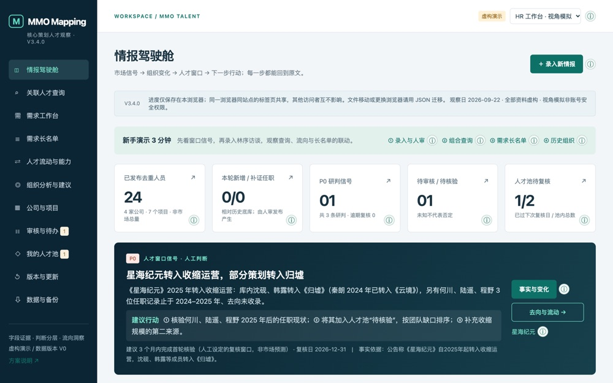

新加坡国立大学
硕士 · 人力资本管理与分析（HCMA）
人力资源管理定量方法
劳工及雇佣法
薪酬与绩效管理
谈判与纷争解决
人才评估与选拔
先后在 腾讯（IEG Global）、小红书、华为、普华永道 等头部企业实习，覆盖全流程招聘、组织设计与人力数据分析。
中英双语沟通（雅思 7.0），曾在英国、法国及新加坡学习。我相信好的 HR 应当兼顾 数据、技术与对人的洞察。
硕士 · 人力资本管理与分析（HCMA）
本科 · 人力资源管理 · GPA 3.6 / 4.0
IEG Games · 海外招聘 HRBP 实习生
组织干部与人才部 · 岗位管理（COE）
招聘调配部 · 人力资源实习生（校园招聘 COE）
FCS – SSC · 人力资源实习生
商业化方向 · HRBP 实习生
面向 HRBP 的人才情报工作台 · V3.4
一个面向 MMO 核心策划的人才 mapping 工作台，让每一条人才结论都能点回原文。它把一次性的寻访变成可复用、可审计的资产，回答三个问题：团队缺什么能力、市场上谁有、下一步先研究谁。

AI 驱动的 Chrome 扩展（MV3）· MIT 协议
一款可本地部署的 AI Chrome 扩展，能对 LinkedIn 候选人按自定义 JD 实时评分。在腾讯 IEG-Global 实习期间开发，目标是标准化、自动化简历初筛。
3 份行业报告 · 华为北研所
围绕 CS/AI 行业人才格局、竞对画像与历年校招数据的深度报告，直接支撑 2024 年校招策略制定。
上海宇量昇科技 · 岗位管理 COE
搭建可量化的组织结构度量模型，覆盖 7 大业务部门 500+ 高级员工，支撑数据驱动的人力决策。
自幼习拉丁舞，多次斩获全国金牌并通过国标舞协金星级别考核——舞台带来的自律、表现力与韧性，也是我带给团队的一部分。
以 HR 为职业发展方向。欢迎和我聊聊关于 「人」「招聘」与「让工作更有温度」 的一切。目前常驻新加坡，可考虑相关地区机会。
📍 常驻新加坡 · 可考虑相关地区机会